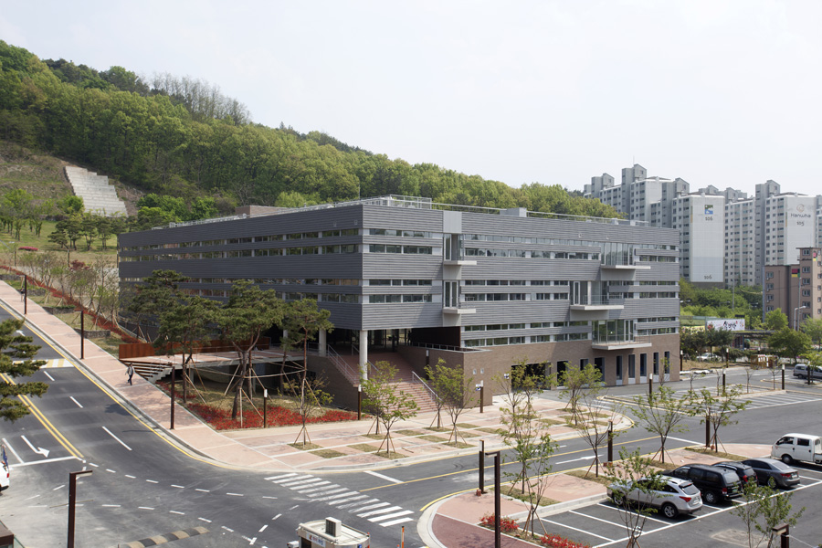

산학협력관을 클릭하셨습니다.

설명 :
산학 협력 및 창업 보육의 활성화로 대전대학교의 미래 발전 동력을 구축하고자 지어진 건물이다. 견고하고 심플한 조형미로서 강인한 의지를 엿볼 수 있는 건물이다. 설계 기오헌 민현식
시공 계룡건설산업
준공 2014
1F 산학부총장실, LINC사업단, 연구실, 연구지원팀
2F 산업협력단, 세미나실
3F 실험실, MDF실